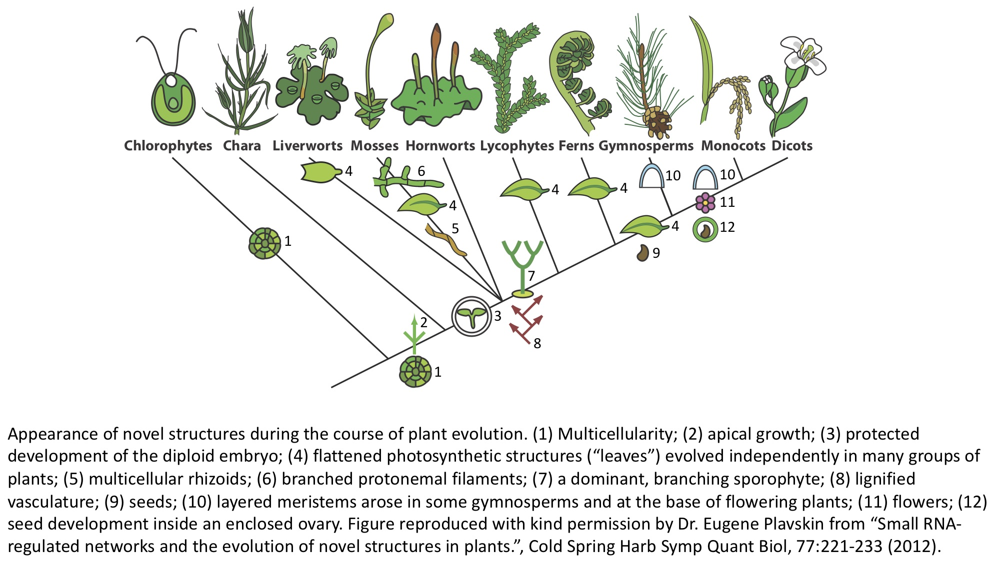

Actividad 1: Las plantas y el clima
Traducción por Pablo Y. Rosiles-Loeza (Langebio-Cinvestav, Irapuato, Gto., México)
¿Qué es una planta?
La humanidad tiene una relación íntima con las plantas. A través de la fotosíntesis, las plantas son la fuente última de casi todos los alimentos que los humanos consumen. Las plantas son la fuente de muchos productos medicinales, así como de sustancias psicoactivas religiosas y recreativas. Además proporcionan fibras para hacer nuestra ropa y materiales estructurales para edificios. A partir del año 10.000 a.C., la humanidad comenzó a domesticar diferentes cultivares. El cultivo de especies de plantas que habían sido alteradas drásticamente por los humanos (debido principalmente al proceso de domesticación) aumentó las calorías disponibles e impulsó el crecimiento de las civilizaciones en todo el mundo.
Como las plantas son tan diversas y varían en la composición de sus comunidades en todo el mundo, la definición de "planta" es culturalmente específica y refleja la relación de una cultura con la flora local. Aquí vamos a centrarnos en una definición científica de las plantas. Una característica que define a las plantas es que son autótrofas: es decir, son capaces de sintetizar su alimento a partir de sustancias inorgánicas. La fotosíntesis es el proceso por el que las plantas y otros organismos convierten el agua y el dióxido de carbono en carbohidratos, utilizando la luz solar como energía. Las cianobacterias son un grupo de bacterias existentes que también realizan fotosíntesis. Se especula que hace mucho tiempo una cianobacteria fue engullida por un eucariota unicelular (un organismo con un núcleo que contiene la mayor parte de su ADN). La cianobacteria y la eucariota desarrollaron una simbiosis, en la que la cianobacteria engullida permaneció en la célula eucariota proporcionando carbohidratos derivados de la fotosíntesis. A través de esta endosimbiosis, la cianobacteria evolucionó hasta convertirse en un cloroplasto, un orgánulo dentro de las células vegetales donde se produce la fotosíntesis.
De este único evento endosimbiótico surgieron todas las plantas (y su cianobacteria capturada que proporciona la fotosíntesis en sus células como cloroplasto). Los descendientes de la célula simbiótica se denominan Archaeplastida ("antiguo" + "plástido"). Los Archaeplastida constan de tres grupos principales: Glaucophyta (glaucofitas), Rhodophyta (algas rojas) y Viridiplantae (plantas verdes). Las glaucofitas son un pequeño grupo de algas unicelulares de agua dulce de las que sólo se han descrito 15 especies. Las algas rojas son en su mayoría multicelulares y marinas. Se han descrito más de 7.000 especies. Poseen hermosas arquitecturas ramificadas y un característico color rojo que surge de los pigmentos accesorios fotosintéticos llamados ficobiliproteínas, que captan la energía luminosa que pasa a las moléculas de clorofila. El último grupo es el de las Viridiplantae, o las "plantas verdes". A continuación se describen brevemente los principales grupos de plantas verdes.
Viridiplantae, las plantas verdes
Las plantas verdes se componen de dos grandes grupos: la Chlorophyta y la Charophyta (algas de agua dulce) + Embryophyta (plantas terrestres)
Chlorophyta
La Chlorophyta ("verde" + "planta") se separó del linaje de las plantas terrestres (Embryophyta) y de las algas de agua dulce (Charophyta)hace unos 1.200 a 725 millones de años. A diferencia de las plantas terrestres, la espectacular diversidad de las clorofitas está infravalorada. Existen unas 4.000 especies de Chlorophyta que habitan principalmente en hábitats marinos, pero también de agua dulce y terrestres. La complejidad macroscópica surgió en múltiples ocasiones en Chlorophyta, a través de la multicelularidad (por ejemplo, la lechuga de mar, Ulva), las colonias multicelulares (Volvox) y los organismos gigantes unicelulares (algas como Caulerpa y Acetabularia). Al igual que las plantas terrestres, algunas clorofitas llegaron a la tierra de forma independiente, mediante simbiosis. Los líquenes son organismos simbióticos terrestres que surgen de la interacción entre un hongo y un socio fotosintético. Éste fotobionte suele ser un alga clorofítica, pero también puede incluir cianobacterias u otras algas (o combinaciones de ellas).
Charophyta
Las carofitas son algas complejas de agua dulce. Existen entre 2.800 y 6.000 especies de carófitos. Las plantas terrestres (Embryophyta) probablemente surgieron de un ancestro Charophycean, aunque sigue siendo discutible de cuál concretamente. Los carófitos reciben su nombre de Chara, un alga multicelular que se se asemeja superficialmente a las plantas terrestres, con estructuras similares a tallos y hojas. El Choleochaete es otra alga multicelular que forma un disco plano y con muchas características de las plantas terrestres, incluyendo la retención de cigotos después de la fertilización y los plasmodesmos (conexiones citoplasmáticas entre células adyacentes). Sorpresivamente, estas características probablemente surgieron de manera independientemente a las plantas terrestres.
Embryophyta
Briofitas
Las briofitas son plantas no vasculares, lo que significa que no tienen un verdadero tejido vascular que contenga lignina (un polímero rígido que es vital para el crecimiento erecto de las plantas vasculares). Las briofitas se dividen en tres grupos: las hepáticas (Marchantiophyta, de 6.000 a 8.000 especies), los antocerotes (Anthocerotophyta, de 100 a 200 especies) y los musgos (Bryophyta, 12.000 especies). Todas las plantas se caracterizan por la "alteración de las generaciones": alternan entre gametofitos haploides con un solo juego de cromosomas que surgen de las esporas y producen gametos, y esporofitos diploides con dos juegos de cromosomas que surgen por la fusión de dos gametos y producen esporas. En las briofitas, el estadio de vida más grande y longevo es el gametofito (a diferencia de otras plantas terrestres, en las que el esporofito es el estadio de vida dominante). A diferencia de los elaborados esporofitos de otras plantas terrestres, los esporofitos de las briofitas no están ramificados.
Pteridofitas 🌿
Las pteridofitas son plantas vasculares, con verdaderos tejidos de xilema (transporte de agua y nutrientes) y floema (transporte de compuestos orgánicos solubles producidos durante la fotosíntesis). Las pteridofitas también son plantas sin semillas. Aunque el estadio de esporofito diploide es dominante, el gametofito es más prominente que la mayoría de las plantas con semillas. Las pteridofitas comprenden las Lycopodiophyta (musgos, 1.200 especies) y las Pteridophyta (helechos, helechos batidores y colas de caballo, 11.000 especies). Los helechos tienen hojas muy elaboradas, llamadas megafilos, que están muy ramificados. Estas hojas se desarrollan de forma acrópeta (de la punta a la base) y se despliegan a partir de una estructura llamada "cabeza de chorlito (fiddlehead, en inglés)". La historia evolutiva de los helechos es complicada y elaborada, y es probable que los megafilos hayan evolucionado varias veces, independientemente de los demás y de las hojas de las gimnospermas y las angiospermas.
Gimnospermas 🌲
Las gimnospermas son plantas con semillas. El nombre de gimnosperma significa "semilla desnuda", y se refiere al óvulo no cerrado que es fecundado para producir la semilla. Las semillas se desarrollan en la superficie de las hojas, en las escamas de los conos o en solitario. Las coníferas (Pinophyta, 630 especies) y las cícadas (Cycadophyta, 160 especies) son los grupos de gimnospermas dominantes. Gnetophyta (70 especies) incluye los géneros Gnetum (árboles tropicales de hoja perenne, arbustos, lianas), Ephedra (incluyendo especies con propiedades medicinales y "té mormón"), y Welwitschia (endémica del desierto de Namibia y que produce dos hojas opuestas y permanentes que crecen desde la base). La Ginkgophyta sólo contiene una especie: Ginkgo biloba.
Angiospermas 🌸
Las angiospermas son las plantas con flores. El nombre de angiosperma deriva de "carcasa" y "semilla". A diferencia de las gimnospermas, las angiospermas producen semillas dentro de un ovario. Las angiospermas se caracterizan por tener flores, endospermo dentro de las semillas y frutos que las contienen. Se conocen más de 300.000 especies de plantas con flores. Las primeras plantas con flores surgieron hace 160 millones de años, se diversificaron rápidamente y sustituyeron a las coníferas como árboles dominantes hace ~ 100-60 millones de años.
Los principales grupos de angiospermas son las magnolíticas (9.000 especies, entre las que se encuentran las magnolias, el laurel, la pimienta negra y el aguacate 🥑), las monocotiledóneas (70.000 especies, entre las que se encuentran el arroz 🌾, el plátano 🍌, la piña 🍍, el maíz 🌽, el coco 🥥, las palmeras 🌴 y los tulipanes 🌷) y las eudicotas (175.000 especies). Las eudicotas se componen de dos grandes grupos, las rosáceas (que incluyen los pepinos 🥒, la fresa 🍓, las cerezas 🍒, los melocotones 🍑, las peras 🍐, las manzanas 🍎, los limones 🍋, las naranjas 🍊, sandía 🍉, y melón 🍈) y Asteridáceas (entre las que se encuentran las zanahorias 🥕, las patatas 🥔, los kiwis 🥝, los pimientos 🌶, las berenjenas 🍆, los tomates 🍅, y el girasol 🌻).
Las características típicas de las monocotiledóneas son un solo cotiledón (u hoja de la semilla), flores con tres pétalos, polen con un solo poro y, a menudo, hojas con venación paralela. Las características típicas de las dicotiledóneas son dos cotiledones, flores con cuatro o cinco pétalos, polen con tres poros y, normalmente, hojas con venación ramificada.


Lista de plantas
Habrás observado que las plantas se describen de forma jerárquica. Hay un gran grupo único (las plantas) que se subdivide cada vez más hasta llegar al nivel de las especies. Por ejemplo, las uvas se clasifican de la siguiente manera: Plantae, Angiospermas, Eudicotas, Rosidas, Orden Vitales, Familia Vitaceae, Género Vitis, Especie V. vinifera. El nombre de la especie se compone del nombre del género (abreviado tras su primer uso) y del epíteto de la especie.
Acabamos de cubrir la historia evolutiva de todas las plantas, pero las plantas con flor son especialmente numerosas y diversas y la fuente de nuestros principales cultivos.
Este gráfico interactivo muestra la clasificación taxonómica anidada de las especies de cultivos de angiospermas, donde los círculos representan la producción en toneladas de cada cultivo en 2011 (datos de aquí). Los cultivos están dentro de círculos que denotan familias de plantas (que siempre terminan con "-aceae").
En la lección anterior, aprendiste a indexar y crear listas (¡y a crear e indexar una lista de listas!). En la celda de abajo, crea una lista de listas con tres niveles:
- El primer nivel de tu lista debe ser "monocotiledóneas", "rosáceas" y "asteráceas"
- Para el segundo nivel de tu lista, elija dos familias para cada uno de los grupos anteriores (recuerda, las familias de plantas terminan en "-aceae" y sí, ¡los nombres son complicados y largos!)
- Para el tercer nivel, añade tantas especies de cultivos pertenecientes a cada familia como desees a la lista respectiva.
- Sugerencia: es más fácil hacer tus listas empezando por el nivel de familia y trabajando hacia arriba para añadir estas listas a las monocotiledóneas, las rosáceas y las asteráceas.
- Nombre tu lista general "mis_cultivos".
- Por último, imprime tu lista para poder ver los resultados
- Recuerda, no tengas miedo de añadir comentarios a tu código usando
#.
Utiliza este ejercicio para explorar las relaciones evolutivas de los cultivos dentro de las plantas con flor. También puedes buscar tu especie de cultivo favorita (la wikipedia es un gran recurso) y colocarla como corresponde en tu lista. Compartiremos y discutiremos los cultivos que elijas en clase.
Respuesta
### RESPUESTA ###
asparagaceae = ["esparrago", "agave"]
araceae = ["taro", "malanga"]
anacardiaceae = ["anacardos", "pistaches"]
malvaceae = ["algodon", "quimbombo", ]
ericaceae = ["arandano", "moras"]
apiaceae = ["zanahoria", "hinojo", "cilantro"]
monocotiledoneas = [asparagaceae, araceae]
rosaceas = [anacardiaceae, malvaceae]
asteraceas = [ericaceae, apiaceae]
mis_cultivos = [monocotiledoneas, rosaceas, asteraceas]
print(mis_cultivos)
[[['esparrago', 'agave'], ['taro', 'malanga']], [['anacardos', 'pistaches'], ['algodon', 'quimbombo']], [['arandano', 'moras'], ['zanahoria', 'hinojo', 'cilantro']]]
Ahora, desde tu lista "mis_cultivos", seleccione su cultivo favorito utilizando la indexación e imprima su nombre. Recuerda: ¡tu lista tiene tres niveles!
Índice del clima
Más arriba ha aprendido sobre la diversidad evolutiva de las plantas. Esta diversidad es intrínsecamente genética: las diferencias entre especies están codificadas en el ADN. Pero el medio ambiente también desempeña un papel en la determinación de lo que son las plantas. Los efectos del medio ambiente pueden ser a largo plazo, actuando a lo largo de períodos de tiempo geológicos en forma de presión de selección que impulsa la evolución. O bien, los efectos del clima pueden producirse en escalas de tiempo más pequeñas, durante la vida de una planta. La plasticidad se refiere a los efectos del medio ambiente en el cambio del fenotipo de un organismo, lo que es. Las plantas suelen ser muy sensibles a su entorno: la cantidad y calidad de luz que reciben, la competencia con otras plantas o la respuesta a los animales depredadores, y la temperatura.
El cambio climático afecta a las plantas de muchas maneras. Estas responderán directamente a los factores abióticos afectados por el cambio climático, como la temperatura y las precipitaciones. Pero también responderán a los efectos indirectos del cambio climático que resultan en la transformación de ecosistemas enteros. El cambio climático es importante para nosotros de múltiples maneras, siendo las dos más obvias: 1) los efectos sobre los cultivos y otras plantas de las que dependemos para sobrevivir y 2) la pérdida de biodiversidad.
Más adelante analizaremos los efectos a largo plazo del clima en los cultivos. Pero por ahora, utilicemos las habilidades de indexación que acabamos de aprender para observar algunas tendencias y también para obtener una vista previa de la visualización de datos que aprenderás en la próxima lección.
En la celda de abajo, los valores de la anomalia de temperatura desde el año 1900 hasta el 2020 se proporcionan en una lista llamada temp_anomaly. Estos datos provienen de NASA. Ejecuta la celda de abajo para crear la lista:
temp_anomaly = [-0.19,-0.23,-0.25,-0.28,-0.3,-0.33,-0.36,-0.37,-0.39,-0.4,-0.41,-0.38,
-0.35,-0.32,-0.31,-0.3,-0.29,-0.29,-0.29,-0.29,-0.27,-0.26,-0.25,-0.24,
-0.23,-0.22,-0.21,-0.2,-0.19,-0.19,-0.19,-0.19,-0.18,-0.17,-0.16,-0.14,
-0.11,-0.06,-0.01,0.03,0.06,0.09,0.11,0.1,0.07,0.04,0,-0.04,-0.07,-0.08,
-0.08,-0.07,-0.07,-0.07,-0.07,-0.06,-0.05,-0.04,-0.01,0.01,0.03,0.01,
-0.01,-0.03,-0.04,-0.05,-0.06,-0.05,-0.03,-0.02,0,0,0,0,0.01,0.02,0.04,
0.07,0.12,0.16,0.2,0.21,0.22,0.21,0.21,0.22,0.24,0.27,0.31,0.33,0.34,
0.33,0.33,0.34,0.34,0.37,0.4,0.43,0.45,0.48,0.51,0.53,0.55,0.59,0.61,
0.62,0.63,0.64,0.65,0.65,0.65,0.67,0.7,0.74,0.79,0.83,0.88,0.91,0.95,
0.98,1.01]
Si hay datos de 1900 a 2020, entonces debería haber 121 valores en la lista. Utilizando una función que hayas aprendido, comprueba la longitud de la lista temp_anomaly en la celda de abajo:
A continuación, crea una lista llamada mi_vida utilizando la indexación que comienza en el año en que naciste y llega hasta el final de los datos proporcionados. Esta lista comienza con los datos de 1900, lo que es una pista sobre cómo indexar adecuadamente los datos. Crea tu lista a través de la indexación en la celda de abajo:
Comprueba la longitud de tu lista usando una función en la celda de abajo para asegurarte de que has indexado correctamente. ¡Debería estar cerca de la edad que tienes! (dependiendo del día de tu cumpleaños... ¡recuerda que esta lista sólo llega hasta el 2020!)
40
En la siguiente lección, aprenderemos a trazar y visualizar nuestros datos. Para ello, necesitaremos importar conjuntos de funciones llamados módulos. Como aprenderás en la siguiente lección, lo hacemos escribiendo import, el módulo que deseamos importar, y utilizando as para decir cómo nos gustaría referirnos al módulo en forma abreviada cuando lo usemos. Hay algunas otras líneas de código que utilizamos para que los gráficos que hacemos se muestren en línea en el cuaderno Jupyter.
Ejecuta la celda de abajo para importar el módulo matplotlib y un submódulo pyplot para que podamos intentar trazar los datos de las anomalías de temperatura.
Aprenderás más sobre cómo trazar los datos en la próxima lección, pero ahora vamos a intentar visualizar los cambios de la anomalía de la temperatura durante tu vida. La función plot de matplotlib toma una lista de números y los gráfica. En los paréntesis vacíos de abajo, saca tu lista mi_vida y sustituye la cadena por el título, la etiqueta del eje x y la etiqueta del eje y para crear un gráfico. Una vez que haya hecho los cambios en el código de abajo, sólo tiene que pulsar shift + Enter y deberá aparecer un gráfico en tu pantalla.
# Coloca tu respuesta aquí
plt.plot( ) # Ponga la lista con sus anomalías de temperatura en su vida aquí
plt.title("Título", fontsize=18) # Ponga un título al gráfico
plt.xlabel("Eje X", fontsize=12)# Ponga un nombre a su eje X
plt.ylabel("Eje Y", fontsize=12)# Ponga un nombre a su eje Y
Respuesta
¡Enhorabuena por tu primer gráfico en Python 🐍! Mira tu gráfico e interprétalo: ¿qué significa? En la próxima lección aprenderás a trazar más a fondo, pero por ahora, ¡eso es todo!
Gracias por participar en esta actividad.